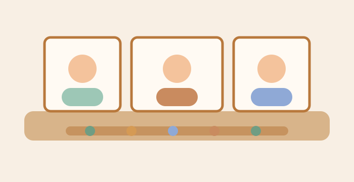
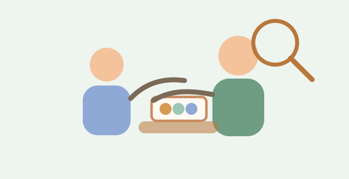
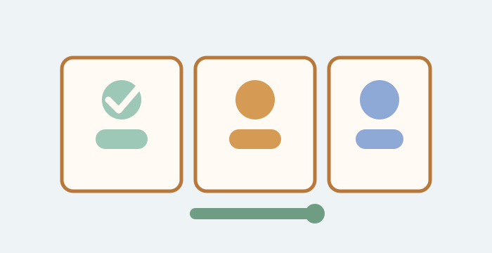
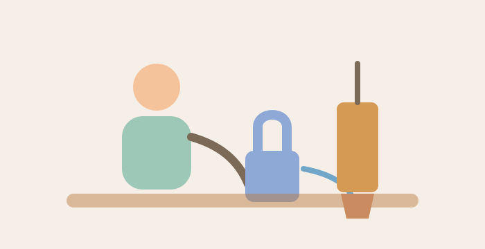
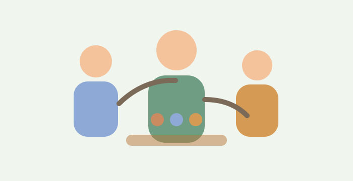
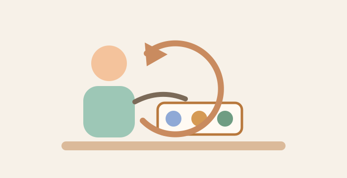
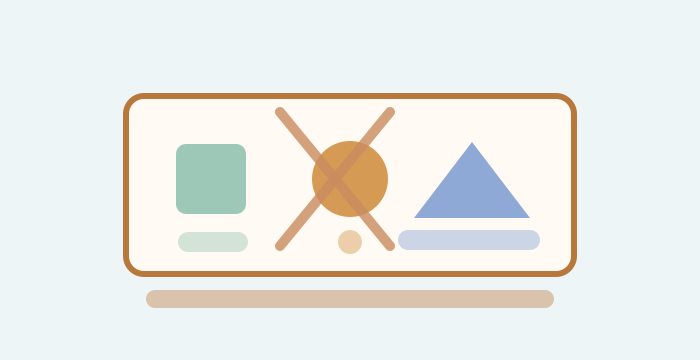
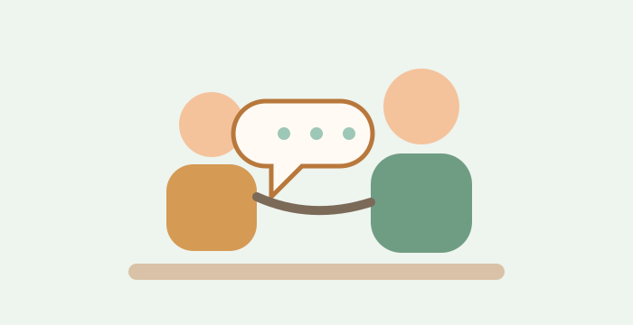
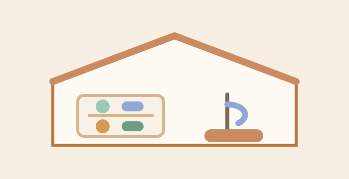

10 принципов Монтессори-педагогики: как они помогают ребенку расти самостоятельным
Монтессори-педагогика - это не набор модных развивающих игр, а продуманная система воспитания, в которой ребенок постепенно учится действовать сам, делать выбор и понимать последствия своих решений. Такой подход особенно важен в дошкольном возрасте, когда формируются самостоятельность, внимание, уверенность и интерес к познанию.
В частном детском саду в Мытищах и развивающих занятиях "Совенка" принципы Монтессори помогают создать спокойную, понятную и уважительную среду для детей. Ниже рассказываем простыми словами, на чем строится эта педагогика и как родители могут использовать ее идеи дома.

1. В центре внимания находится ребенок
Главная мысль метода Монтессори проста: ребенок развивается лучше, когда взрослый замечает его настоящие потребности, а не подгоняет под общий сценарий. Один малыш сегодня долго переливает воду, другой собирает рамки-вкладыши, третий наблюдает за старшими детьми. Все это может быть важной работой, если занятие выбрано осознанно и соответствует возрасту.
Взрослому важно не торопить ребенка и не заменять его интерес своими ожиданиями. Если малыш сосредоточен, он учится гораздо большему, чем кажется со стороны: координации движений, терпению, порядку действий и самостоятельному исправлению ошибок.
2. Педагог наблюдает и мягко направляет

Роль педагога в Монтессори-среде отличается от привычной позиции "главного объясняющего". Наставник не командует каждым шагом, а внимательно наблюдает, когда ребенку нужна презентация материала, помощь или новый уровень сложности. Такое сопровождение помогает сохранить естественную любознательность.
Хороший взрослый рядом не делает за ребенка то, что тот уже способен сделать сам. Он показывает способ, дает время попробовать и вмешивается только тогда, когда это действительно нужно для безопасности, порядка или развития.
3. Подготовленная среда помогает учиться без давления
Одна из основ Монтессори-педагогики - правильно организованное пространство. Материалы находятся на доступных полках, у каждой вещи есть свое место, мебель подходит ребенку по росту, а задания расположены так, чтобы малыш мог выбрать их самостоятельно.
Дома этот принцип тоже легко применить. Низкая полка для игрушек, доступный крючок для одежды, маленький кувшин для воды, отдельная тряпочка для уборки - такие простые детали дают ребенку возможность участвовать в повседневной жизни семьи, а не ждать постоянной помощи взрослого.
4. Свобода выбора сочетается с понятными правилами

Монтессори не означает вседозволенность. Ребенок может выбрать занятие, место работы и темп, но он соблюдает границы: материал берут по одному, после занятия возвращают на место, чужую работу не прерывают, с предметами обращаются бережно.
Такие правила создают чувство безопасности. Детям легче проявлять инициативу, когда они понимают, что можно делать, а что нарушает спокойствие группы. Свобода становится не хаосом, а тренировкой ответственности.
5. Самостоятельность развивается через реальные действия

Ребенку важно не только знать, что он "уже большой", но и ежедневно переживать опыт самостоятельности. Застегнуть липучки, налить воду, убрать за собой крошки, выбрать книгу, поставить материал обратно - это маленькие шаги, из которых складывается уверенность в себе.
Чем чаще взрослый спокойно дает ребенку время на такие действия, тем быстрее малыш начинает доверять собственным силам. Именно поэтому в центре развития в Мытищах большое внимание уделяется не только занятиям, но и бытовым навыкам, порядку, заботе о среде.
6. Разновозрастная группа учит через наблюдение

В Монтессори-классе дети разного возраста могут заниматься рядом. Младшие видят, как работают старшие, и естественно тянутся к новым умениям. Старшие, в свою очередь, закрепляют навыки, когда показывают пример и помогают более маленьким детям.
Так формируется мягкая социальная среда без постоянного сравнения. Ребенок видит не соревнование, а путь развития: сегодня он наблюдает, завтра пробует сам, позже становится примером для других.
7. Темп ребенка уважают

Некоторым детям нужно несколько минут, чтобы разобраться с новым материалом, другим - больше времени на повторение. В Монтессори-подходе повтор считается важной частью обучения. Если ребенок снова и снова выполняет одно и то же действие, он не "застрял", а укрепляет навык.
Уважение к темпу снижает тревожность. Малыш не боится ошибиться и не ждет оценки за каждый шаг. Он учится замечать результат собственной работы и постепенно доводить действие до завершения.
8. Ошибка становится частью обучения

Многие Монтессори-материалы устроены так, что ребенок сам видит неточность. Например, деталь не подходит по размеру, последовательность нарушена, лишний предмет не помещается на место. Взрослому не нужно сразу говорить "неправильно" - материал сам подсказывает, что стоит попробовать иначе.
Такой опыт формирует спокойное отношение к ошибкам. Ребенок понимает: ошибка - не повод расстраиваться, а сигнал к поиску другого решения.
9. Помощь не навязывают
Взрослым часто хочется ускорить процесс: застегнуть пуговицу, дорисовать линию, подсказать ответ. Но для ребенка ценнее возможность завершить работу самому. В Монтессори-педагогике помощь предлагают деликатно и только в том объеме, который нужен.
Полезный вопрос для родителей: "Ты хочешь попробовать сам или тебе показать?" Он сохраняет уважение к выбору ребенка и не лишает его инициативы.
10. Уважение к ребенку начинается с повседневного общения

Монтессори-подход невозможен без уважительного тона. Ребенка не сравнивают с другими, не стыдят за медлительность, не перегружают похвалой ради похвалы и не требуют результата любой ценой. Вместо этого взрослый замечает усилие, помогает назвать эмоции и поддерживает порядок действий.
Для дошкольника такое отношение особенно ценно. Он чувствует, что его видят и слышат, а значит, может спокойнее пробовать новое, просить о помощи и развиваться в своем ритме.
Как применять принципы Монтессори дома

Начните с малого: уберите лишние игрушки с открытых полок, оставьте несколько понятных занятий, выделите ребенку доступное место для одежды и личных вещей. Предлагайте реальные бытовые задачи: вытереть стол, полить цветок, разложить ложки, убрать книгу.
Не стремитесь превратить дом в полноценный класс. Главная цель - сделать пространство понятным, спокойным и посильным для ребенка. Тогда принципы Монтессори будут работать естественно: малыш станет больше пробовать сам, бережнее относиться к вещам и увереннее включаться в жизнь семьи.
© детский центр "Совенок". Все права защищены. 2016-2026